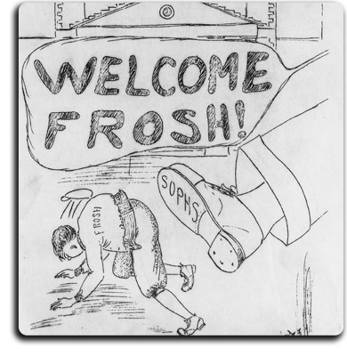
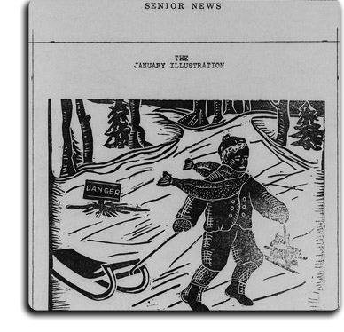
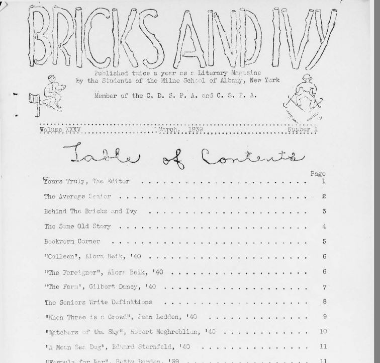
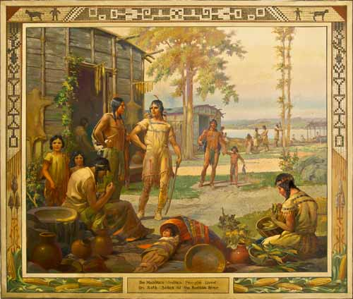
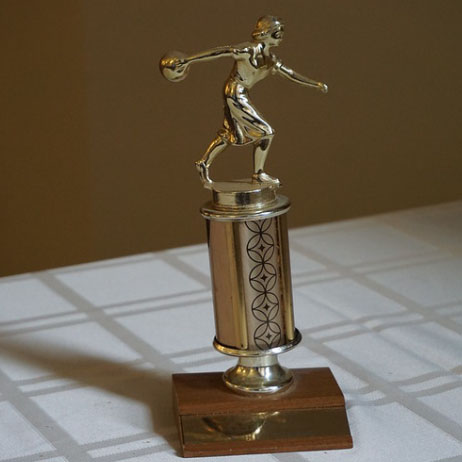

The Milne School Digital Selections
Records of The Milne School, 1890-1977
[Browse a Listing of The Milne School Print Records and Manuscripts]History of The Milne School, 1845-1977
[View a PDF Presentation of School's History]
|
Crimson and White
|
Browse the Junior News. |
|
Browse the Senior News. |
Browse the Bricks and Ivy Yearbooks. |
|
Browse Images |
Browse Images |
The September 1, 1984, dedication of the Milne Commons Room, Education Building Room 335. [click play button below to hear audio] |